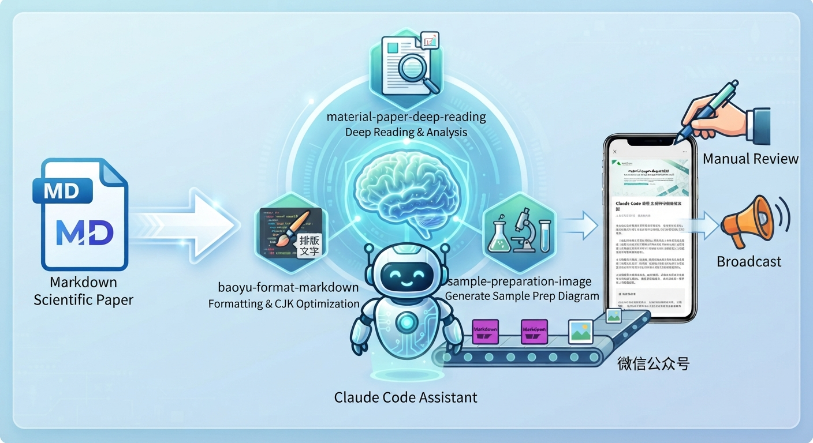
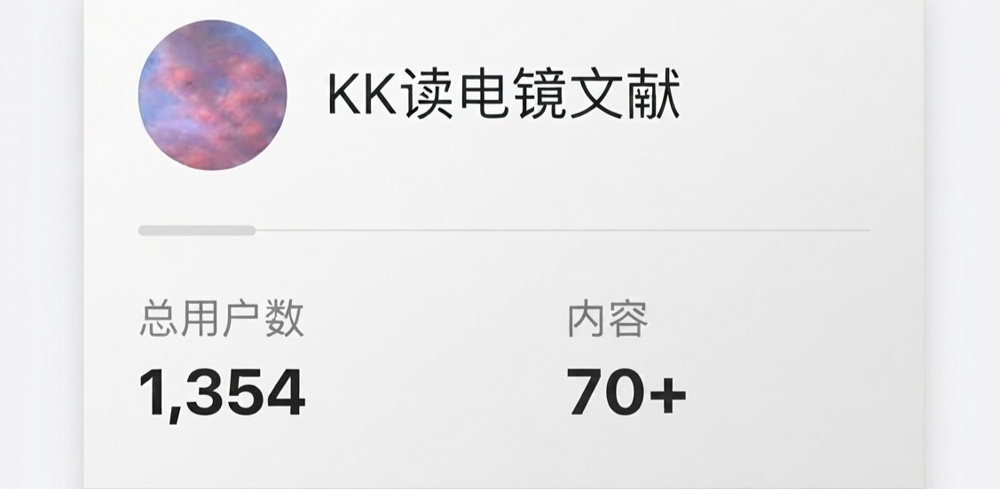

AI 文献精读与微信公众号发布半自动化工作流
针对公众号文献解读中的多轮 Prompt 复制、排版重复和后台发布链路割裂问题，将“论文输入 - 结构化解读 - 图文排版 - 草稿上传”拆解为半自动化工作流。通过 Skill 模块化、微信公众号草稿发布链路和人工审阅节点，将单篇文章流程由 2-3 小时压缩至约 30 分钟。
查看 GitHub微信公众号运营、AIGC 内容生产与 AI Agent 工作流搭建实践者。
我关注真实内容生产场景，擅长把重复流程抽象成可落地的 AI 工具，并用数据反馈持续优化。

面向 AI 产品经理实习方向，关注真实内容生产场景中的工作流拆解、质量控制和数据复盘。
我叫王小璐，现为上海科技大学研二硕士生，求职方向为 AI 产品经理实习生。
我的项目都来自真实科研内容生产场景：独立运营科研科普公众号「KK读电镜文献」，围绕材料与电镜方向研究生的文献阅读需求，沉淀结构化选题、AIGC 内容生产和图文表达方法，5 个月累计阅读量 5w+、粉丝增长 1300+。
在此基础上，我使用 Codex、Claude Code 等工具搭建 AI 文献精读与微信公众号发布半自动化工作流，将“论文输入、结构化解读、图文排版、草稿上传”拆解为可复用模块，并保留人工审阅节点控制作者信息、术语翻译和图文一致性等风险，将单篇文章流程压缩至约 30 分钟。
我关注的不只是“用 AI 生成内容”，而是如何识别真实痛点、拆解任务，迭代 Prompt，搭建 Workflow、进行质量检验与效果复盘。
三个项目共同展示了我从 AI 工作流设计、数据复盘到真实内容场景验证的实践路径。

针对公众号文献解读中的多轮 Prompt 复制、排版重复和后台发布链路割裂问题，将“论文输入 - 结构化解读 - 图文排版 - 草稿上传”拆解为半自动化工作流。通过 Skill 模块化、微信公众号草稿发布链路和人工审阅节点，将单篇文章流程由 2-3 小时压缩至约 30 分钟。
查看 GitHub
围绕公众号选题复盘需求，搭建可交互的内容策略数据 HTML 看板，按研究方向、内容类型、阅读表现和粉丝增长分析 70+ 篇推文。基于 Top10 内容、关注率和分享率识别高价值内容特征，并将结论反哺 AI 文献解读的选题优先级、标题结构和 Prompt 输出侧重点。
查看数据看板
面向材料与电镜方向研究生和科研人员，独立创立并运营科研科普公众号，提供结构化前沿文献解读，结合 ChatGPT、Gemini、Deepseek 等 AIGC 工具进行内容创作，并通过结构化 Prompt 支撑 5 个月涨粉 1300+，总阅读量 5w+。
查看公众号具有半导体、材料科学、电子信息等专业知识背景。
材料科学与工程，硕士
结构工程（主修）+ 电子信息工程（辅修），本科
围绕 AI 应用产品、内容生产工作流、数据复盘和 Agent 协作形成的能力组合。
Prompt Engineering、AI Workflow、Skill 模块化、质量校验、Bad Case 迭代
ChatGPT、DeepSeek、Gemini、即梦、科研文献解读、图文内容生成
Figma、Xmind、飞书文档、指标体系、内容看板、效果复盘
Codex、Claude Code、Agent 工作流拆解、任务编排、人机协同审核、自动化发布链路
期待 AI 产品经理、AI 内容运营相关机会。